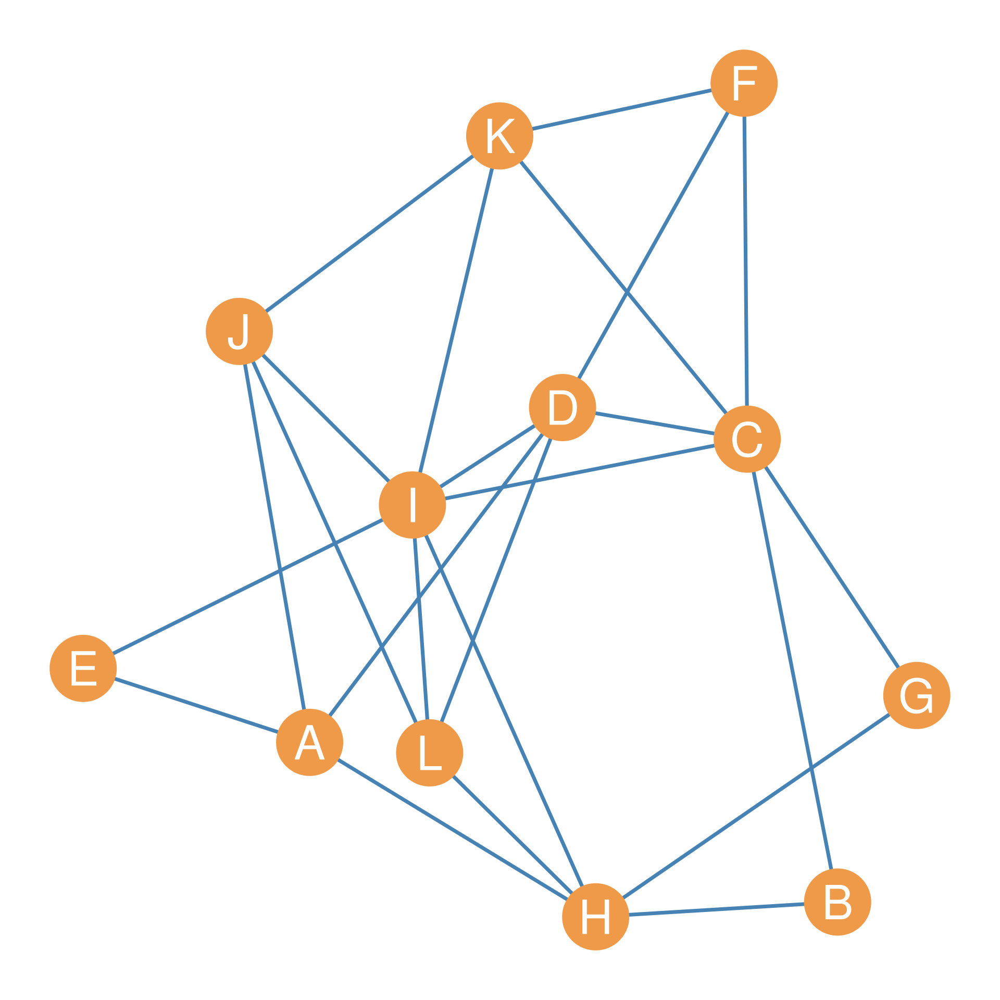

| A | B | C | D | E | F | G | H | I | J | K | L | |
|---|---|---|---|---|---|---|---|---|---|---|---|---|
| A | 0 | 1 | 1 | 0 | 0 | 1 | 1 | 0 | 4 | 0 | 1 | 3 |
| B | 1 | 0 | 0 | 1 | 0 | 1 | 2 | 0 | 2 | 0 | 1 | 1 |
| C | 1 | 0 | 0 | 2 | 1 | 2 | 0 | 3 | 2 | 2 | 2 | 2 |
| D | 0 | 1 | 2 | 0 | 2 | 1 | 1 | 3 | 2 | 3 | 3 | 1 |
| E | 0 | 0 | 1 | 2 | 0 | 0 | 0 | 2 | 0 | 2 | 1 | 1 |
| F | 1 | 1 | 2 | 1 | 0 | 0 | 1 | 0 | 3 | 1 | 1 | 1 |
| G | 1 | 2 | 0 | 1 | 0 | 1 | 0 | 0 | 2 | 0 | 1 | 1 |
| H | 0 | 0 | 3 | 3 | 2 | 0 | 0 | 0 | 1 | 3 | 1 | 1 |
| I | 4 | 2 | 2 | 2 | 0 | 3 | 2 | 1 | 0 | 2 | 2 | 3 |
| J | 0 | 0 | 2 | 3 | 2 | 1 | 0 | 3 | 2 | 0 | 1 | 1 |
| K | 1 | 1 | 2 | 3 | 1 | 1 | 1 | 1 | 2 | 1 | 0 | 2 |
| L | 3 | 1 | 2 | 1 | 1 | 1 | 1 | 1 | 3 | 1 | 2 | 0 |
34 Local Node Similarities
As we noted in Section 6.12, it is possible for the neighborhood of two nodes in a graph to overlap. Recall that for each node, we define its neighborhood as the set of other nodes that it is adjacent to. That means the neighborhood between two nodes can have members in common, which is the intersection of these two sets. The more members they have in common, the more structurally similar two nodes are.
Similarities based on the neighborhood overlap between two nodes are called local node similarities because they only use information on the immediate ego network of the two nodes, based only on direct (one-step) connections.1
34.1 Structural Equivalence and Local Similarity
If two nodes A and B are structurally equivalent, then their neighborhood overlap \(O(A, B)\) is equivalent to their total set of neighbors, meaning that the cardinality of their neighborhood sets is the same as the cardinality of the intersection of those sets. In mathese, for structurally equivalent nodes:
\[ N(A) = N(B) \] \[ O(A,B) = |N(A) \cap N(B)| = |N(A)| = |N(B)| \tag{34.1}\]
Equation 34.1 says that when two nodes are structurally equivalent, their overlap is the same as the cardinality of the intersection between their neighborhoods, which happens to be the same as the cardinality of their original neighborhoods!
For instance, imagine you have a friend, and that friend knows all your friends, and you know all their friends. In which case, we would say that the overlap between your node neighborhoods is pretty high; in fact, the two neighborhoods overlap completely, which makes you structurally equivalent!
But even if your friend knows 90% of the people in your network (and you know 90% of the people in their network), that would make you very structurally similar to one another.
Now imagine you just met a new person online who lives in a faraway country, and as far as you know, they know none of your friends, and you know none of their friends. In that case, we would say that the overlap between the two neighborhoods is nil, or as close to zero as it can get. You occupy completely different positions in the network.

34.2 The Neighborhood Overlap Matrix
To measure structural similarity between nodes based on their neighborhood overlap, we construct a new matrix, called the neighborhood overlap matrix, which stores neighborhood overlap information for each pair of nodes.
Consider the graph shown in Figure 34.1. Its corresponding neighborhood overlap matrix is shown in Table 34.1. In the matrix, each cell gives us the overlap between the row node and the column node. Because \(O(i, j) = O(j, i)\) for all nodes i and j in a graph, the neighborhood overlap matrix is symmetric (has the same information in the upper and lower triangles).
Table 34.1 shows that some nodes like A and I have a very strong overlaps in their neighborhoods: \(O(A, I) = 4\), for other nodes, like \(G\) and \(F\), the overlap is much lower \(O(G, F) = 1\). For nodes that don’t have any neighbors in common, like B and H, the overlap is at its minimum, namely, zero: \(O(B, H) = 0\).
34.2.1 Jaccard Similarity
Once we have recorded the neighborhood overlap information, we can construct a measure of structural similarity between two nodes called Jaccard’s Similarity Coefficient (\(J_{ij}\)) (Jaccard 1901). Actually, we will need one more piece of information before computing this measure (and the other measures that follow): the graph’s degree set. This is shown in Table 34.2.
| A | B | C | D | E | F | G | H | I | J | K | L |
|---|---|---|---|---|---|---|---|---|---|---|---|
| 4 | 2 | 6 | 5 | 2 | 3 | 2 | 5 | 7 | 4 | 4 | 4 |
The Jaccard similarity between two nodes i and j is defined as follows. Let’s say \(n_{ij}\) is the number of friends that nodes i and j have in common, and the total number of i’s friends is \(k_i\) (i’s degree) and the total number of j’s friends if \(k_j\) (j’s degree). Then the structural similarity of i and j is given by:
\[ J_{ij} = \frac{n_{ij}}{k_i + k_j - n_{ij}} \tag{34.2}\]
Equation 34.2 says that the structural similarity between two nodes is equivalent to the number of friends they have in common, divided by the sum of their degrees minus the number of people they have in common. Jaccard’s coefficient ranges from zero (when \(n_{ij}=0\) and the two nodes have no neighbors in common) to 1.0 (when \(n_{ij} = k_i\) and \(n_{ij} = k_j\) and the two nodes are structurally equivalent).
For instance, Table 34.1 tells us that nodes D and H have three neighbors in common: \(n_{DH} = 3\), and Table 34.2 tells us that the degree of D is \(k_D = 5\) and that the degree of H is also \(k_H = 5\). This means that the Jaccard similarity \(J_{DH}\) is:
\[ J_{DH} = \frac{3}{5 + 5 - 3} = \frac{3}{10-3}=\frac{3}{7} = 0.43 \]
| A | B | C | D | E | F | G | H | I | J | K | L | |
|---|---|---|---|---|---|---|---|---|---|---|---|---|
| A | -- | 0.2 | 0.11 | 0 | 0 | 0.17 | 0.2 | 0 | 0.57 | 0 | 0.14 | 0.6 |
| B | -- | -- | 0 | 0.17 | 0 | 0.25 | 1 | 0 | 0.29 | 0 | 0.2 | 0.2 |
| C | -- | -- | -- | 0.22 | 0.14 | 0.29 | 0 | 0.38 | 0.18 | 0.25 | 0.25 | 0.25 |
| D | -- | -- | -- | -- | 0.4 | 0.14 | 0.17 | 0.43 | 0.2 | 0.5 | 0.5 | 0.12 |
| E | -- | -- | -- | -- | -- | 0 | 0 | 0.4 | 0 | 0.5 | 0.2 | 0.2 |
| F | -- | -- | -- | -- | -- | -- | 0.25 | 0 | 0.43 | 0.17 | 0.17 | 0.17 |
| G | -- | -- | -- | -- | -- | -- | -- | 0 | 0.29 | 0 | 0.2 | 0.2 |
| H | -- | -- | -- | -- | -- | -- | -- | -- | 0.09 | 0.5 | 0.12 | 0.12 |
| I | -- | -- | -- | -- | -- | -- | -- | -- | -- | 0.22 | 0.22 | 0.38 |
| J | -- | -- | -- | -- | -- | -- | -- | -- | -- | -- | 0.14 | 0.14 |
| K | -- | -- | -- | -- | -- | -- | -- | -- | -- | -- | -- | 0.33 |
| L | -- | -- | -- | -- | -- | -- | -- | -- | -- | -- | -- | -- |
The structural similarities among all nodes in Figure 34.1, based on Jaccard’s index, are shown in Table 34.3.
34.2.2 Dice Similarity
A second measure of structural similarity between nodes, based on neighborhood overlap, is the Dice Similarity Index. It goes like this (Dice 1945):
\[ D_{ij} = \frac{2n_{ij}}{k_i + k_j} \tag{34.3}\]
This says that the structural similarity between two nodes equals twice the number of people they know in common, divided by the sum of their degrees.
| A | B | C | D | E | F | G | H | I | J | K | L | |
|---|---|---|---|---|---|---|---|---|---|---|---|---|
| A | -- | 0.33 | 0.2 | 0 | 0 | 0.29 | 0.33 | 0 | 0.73 | 0 | 0.25 | 0.75 |
| B | -- | -- | 0 | 0.29 | 0 | 0.4 | 1 | 0 | 0.44 | 0 | 0.33 | 0.33 |
| C | -- | -- | -- | 0.36 | 0.25 | 0.44 | 0 | 0.55 | 0.31 | 0.4 | 0.4 | 0.4 |
| D | -- | -- | -- | -- | 0.57 | 0.25 | 0.29 | 0.6 | 0.33 | 0.67 | 0.67 | 0.22 |
| E | -- | -- | -- | -- | -- | 0 | 0 | 0.57 | 0 | 0.67 | 0.33 | 0.33 |
| F | -- | -- | -- | -- | -- | -- | 0.4 | 0 | 0.6 | 0.29 | 0.29 | 0.29 |
| G | -- | -- | -- | -- | -- | -- | -- | 0 | 0.44 | 0 | 0.33 | 0.33 |
| H | -- | -- | -- | -- | -- | -- | -- | -- | 0.17 | 0.67 | 0.22 | 0.22 |
| I | -- | -- | -- | -- | -- | -- | -- | -- | -- | 0.36 | 0.36 | 0.55 |
| J | -- | -- | -- | -- | -- | -- | -- | -- | -- | -- | 0.25 | 0.25 |
| K | -- | -- | -- | -- | -- | -- | -- | -- | -- | -- | -- | 0.5 |
| L | -- | -- | -- | -- | -- | -- | -- | -- | -- | -- | -- | -- |
For nodes D and H in Figure 34.1, this would be equal to:
\[ D_{DH} = \frac{2 \times 3}{5 + 5} = \frac{6}{10} = 0.60 \]
The structural similarities among all nodes in Figure 34.1, as measured by Dice’s index, are shown in Table 34.4.
34.2.3 Cosine Similarity
A third and final measure of structural similarity between two nodes, based on neighborhood overlap, is the cosine similarity between their neighborhoods (\(C_{ij}\)). This is given by:
\[ C_{ij} = \frac{n_{ij}}{\sqrt{k_ik_j}} \tag{34.4}\]
Which states that the structural similarity between two nodes is equivalent to the number of people they know in common, divided by the square root of the product of their degrees (also referred to as the geometric mean of their degrees).
| A | B | C | D | E | F | G | H | I | J | K | L | |
|---|---|---|---|---|---|---|---|---|---|---|---|---|
| A | -- | 0.35 | 0.2 | 0 | 0 | 0.29 | 0.35 | 0 | 0.76 | 0 | 0.25 | 0.75 |
| B | -- | -- | 0 | 0.32 | 0 | 0.41 | 1 | 0 | 0.53 | 0 | 0.35 | 0.35 |
| C | -- | -- | -- | 0.37 | 0.29 | 0.47 | 0 | 0.55 | 0.31 | 0.41 | 0.41 | 0.41 |
| D | -- | -- | -- | -- | 0.63 | 0.26 | 0.32 | 0.6 | 0.34 | 0.67 | 0.67 | 0.22 |
| E | -- | -- | -- | -- | -- | 0 | 0 | 0.63 | 0 | 0.71 | 0.35 | 0.35 |
| F | -- | -- | -- | -- | -- | -- | 0.41 | 0 | 0.65 | 0.29 | 0.29 | 0.29 |
| G | -- | -- | -- | -- | -- | -- | -- | 0 | 0.53 | 0 | 0.35 | 0.35 |
| H | -- | -- | -- | -- | -- | -- | -- | -- | 0.17 | 0.67 | 0.22 | 0.22 |
| I | -- | -- | -- | -- | -- | -- | -- | -- | -- | 0.38 | 0.38 | 0.57 |
| J | -- | -- | -- | -- | -- | -- | -- | -- | -- | -- | 0.25 | 0.25 |
| K | -- | -- | -- | -- | -- | -- | -- | -- | -- | -- | -- | 0.5 |
| L | -- | -- | -- | -- | -- | -- | -- | -- | -- | -- | -- | -- |
For nodes D and H in Figure 34.1, this would be equal to:
\[ D_{DH} = \frac{3}{\sqrt{5 \times 5}} = \frac{3}{\sqrt{25}} = \frac{3}{5} = 0.60 \]
The structural similarities for all nodes in Figure 34.1 based on the cosine distance are shown in Table 34.5.
Often, these three measures of structural similarity agree closely.
34.2.4 Neighborhood Overlap in Directed Graphs
Similarity works in similar (pun intended) ways when studying asymmetric ties in a directed graph. The main difference, as usual, is that in a directed graph, pairs of nodes can be structurally similar in two different ways.
First, pairs of nodes can be similar with respect to their out-neighborhoods, in which case we say that nodes are structurally similar if they point to the same set of neighbors. This is called the out-similarity.
Second, pairs of nodes can be similar with respect to their in-neighborhoods, in which case we say that nodes are structurally similar if they receive ties or nominations from the same set of neighbors. This is called the in-similarity.
Special cases of the out- and in-similarities between nodes occur in particular types of networks. For instance, consider an information network composed of scientific papers. Here, a directed tie emerges when paper A cites or refers to paper B. This is called a citation network.
In a citation network, out-similar papers are papers that cite the same other papers. Out-similar papers are said to exhibit bibliographic coupling (essentially the overlap or set intersection between their reference lists). A weighted network of similarities between papers, where the weight of an edge is the number of other papers they both cite, is called a bibliographic coupling network. A bibliographic coupling network is essentially a network of out-similarities between papers in a scientific information network.
In a citation network, in-similar papers are papers that get cited by the same set of others. In this case, we say that the two papers are co-cited by a third paper. A weighted network of similarities between papers, where the weight of the edge is the number of other papers that cite both of them is called co-citation network. A co-citation network is essentially a network of similarities between papers in a scientific information network.
The two measures of out and in-similarities can be defined in the same way as before. If \(n^{out}_{ij}\) is the number of common out-neighbors of nodes i and j and \(n^{in}_{ij}\) is the number of their common out-neighbors, \(k_{out}\) is the total number of out-neighbors of a particular node, and \(k_{in}\) is the total number of in-neighbors, then the structural out and in-similarities between pairs of nodes i and j are given by (using the cosine distance measure) by:
\[ C_{ij}^{out} = \frac{n_{ij}^{out}}{\sqrt{k_i^{out}k_j^{out}}} \tag{34.5}\]
\[ C_{ij}^{in} = \frac{n_{ij}^{in}}{\sqrt{k_i^{in}k_j^{in}}} \tag{34.6}\]
References
We can also define similarities based on indirect connections between nodes, but that’s a subject for a future lesson.↩︎